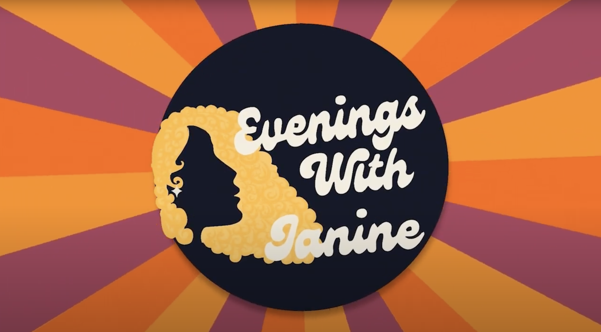
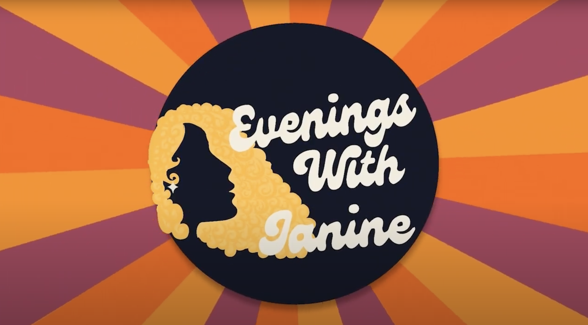
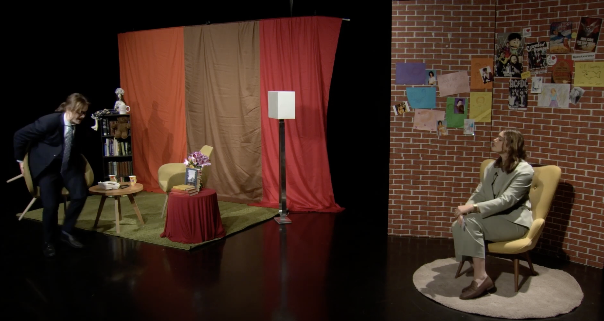
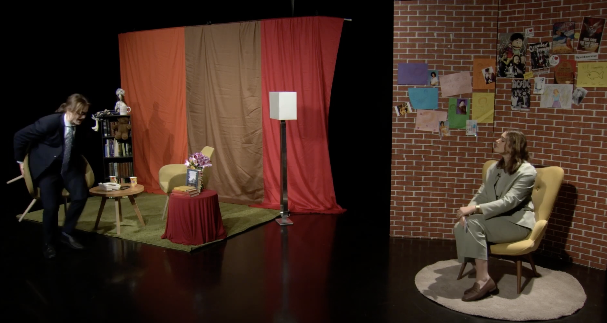

For years, Tess has been deeply immersed in the world of video design, developing her craft with tools like After Effects and Premiere Pro and Abode Illustrator. She thrives in the realm of motion graphics, seamlessly blending illustrations from Illustrator to breathe life into my creations. She is here to bring stories to life through the magic of moving images.
BORDERLINE
For this Project she created text animations for a theatrical production for BPD awareness week called BORDERLINE. She worked on this as part of a AV (Audiovisual) team in collobartion with RMIT and Monash University. During this process she learnt projection mappign within MadMapper and understanding Tech-based queuing in Qlab.

Amazing Grace Season 2
In this role, Tess was responsible for all the special effects during the second season from episode two through to episode five. She utilised Abode After Effects to create multiple animations. This job taught her how to work remotely and to be able to create and follow a self-managed production timeline alongside the main production timeline.
First Run Season 1
Tess was in charge of editing the visual effects shown live on broadcast, alongside some promotional material and episode uploads to YouTube. This role involved sticking to a production timeline, communicating effectively with management, producers and live technical support.
 

 

Evenings with Janine Season 1
In this role Tess was involved in weekly editing a segement for a dynamic talk shown on Monday nights on Channel 31 within an editing team. She had to take on Producer's design briefs and understand rendering requirements for television standards.